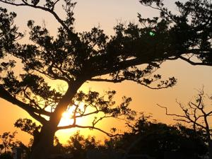
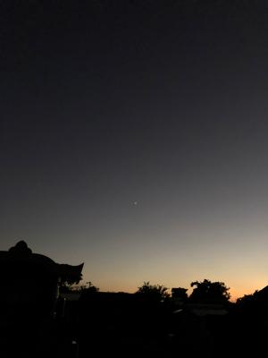
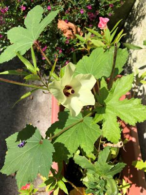

うるがいの話 ある日
最新: 原価率うるがいとは 前提知識です
カニの画像をクリックすると『うるがいの話』サイトを表示します|
|
【うるがいの話】 うるがい(ｳﾙｶﾞｲ urugai)とは、『もずくがに』の名前でとても大きくなります。 |
|---|---|
|
|
【Got cat カミマヤーの話】 たながー（ﾀﾅｶﾞｰtanagaa）とは手長えびのことで、何種類かあり大きいのは車 エビぐらいになります。 |

|
【ぶながぁの話】 ぶながー(bunagaa)とは、赤い髪の毛、赤い身体、そして身長は１ｍ２０ｃｍ ぐらい、川の蟹を食べているの目撃された。場所は沖縄県国頭郡大宜味村のと ある村僕の隣近所に住んでいる爺さんから、聞いた話です。 |
|
|
【ギーマの話】 ギーマ(giima)とは、山原の里山に咲くスズランに似た、 花を付けます。実は食べられます、 気が付くと口の周りが紫になっています。 |
2021年10月03日 (日）原価率
16:39
  
原価率が百を超えてしまう、どうにかしないといけないとプロジェクトの人達
が話している。なぜか、わたしは別のプロジェクトへ移る。新しいメンバーと
挨拶を交わす。これは、今朝の生々しい夢である。私が現役時代、５．７億の
仕事を原価率が３００％に近いとんでもない事態にあってしまった。働けど働
けど給料には反映されないものだった。理不尽だったと思うが、世の中そうい
うものもある事を経験しただけで、有り難いと思うようにしている。生きてさ
えいれば何とかなると。ところで原価率を全く意識せず働くことも経験した。
世の中いろいろである。画質が落ちないよう、ユチューブへの動画アップを学
習し、最高に気にいっている作品６番をアップした。ところがである、著作権
に問題がある！（とってもびっくり、ＡⅠで判断しているようだ）と確かにユ
チューブで演奏している楽譜をそのまま転用しているのだから。んん、暫く考
えたあとユチューブに載っていないものだと大丈夫かなと、作品２番をアップ
した。でも同じように著作権に問題がある・・・、でもよくみると・・・・・
とりあえず、様子をみてみる事にする。
作品２番（ユチューブ）